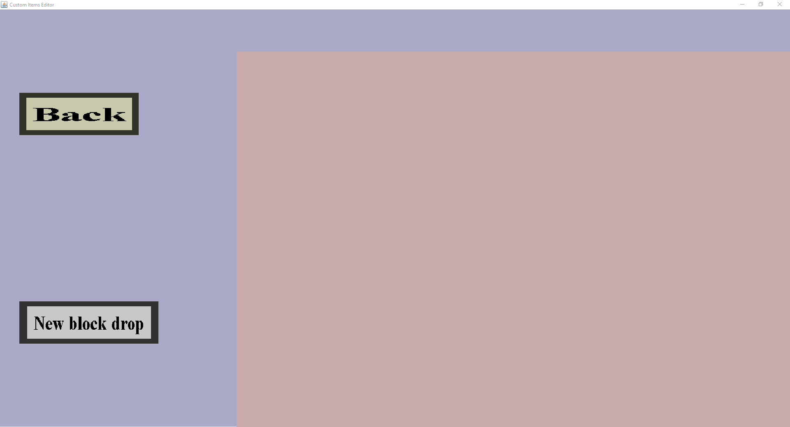

The block drop menu is the root menu from which you can add, edit and delete block drops. It should look like this:
The menu consist out of the back button and the new block drop button.
The 'Back' button will remember the changes made and return you to the Drops Menu. Do note that the changes are not saved until the 'Save' button is pressed in the Item Set Edit Menu.When pressing the 'New block drop' button, a submenu opens up which should look like this:

The 'Block' and 'Drop' button both open up a submenu where you can change the block that will get the drop, and the item that is dropped from the selected block. For more information, please visit the respective pages.
The 'Cancel' button will bring you back to the previous menu (at the top of the page) without remembering the changes you have made. The 'Create' button does the same thing as the 'Cancel' button but instead remembers the changes you have made. Do note that the Drop cannot be 'None', otherwise red text at the top will tell you that a drop cannot be empty. After creating a drop, the overview menu should look like this (with different names for the different drops and blocks):

After a drop has been created, as such in the picture above, three buttons appear next to it. From now on we will refer to this as an entry. Every new drop will be an entry in the overview menu. This does not mean that all drops are applied to the same block, or every block drops the same thing. This just means that we have a list of all drops that will be added to the game. Each entry lists which item will be dropped by which block, and three buttons: Edit, Copy and Delete.
This button opens up the same submenu as the 'New block drop' but with the right information filled in. This allows you to edit a drop, without recreating it from scratch. Instead of 'Create' there will now be 'Apply'. Pressing this button does the same as that 'Create' does but instead of creating a new entry, it overwrites the entry you were editing.
The copy button does the same thing as the 'Edit' button but instead of overwriting the current entry, it creates a new one. This is done so that you can quickly add the same drop to multiple blocks.
The delete button deletes the entry from the list. After pressing this button, there is no way to recover the entry. If you want to get it back, you have to recreate it yourself using the 'New block drop' button.